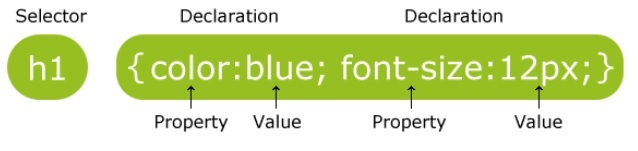

02 Estructura documento CSS
Estructura documento CSS
Tal y como se ha visto en el punto anterior, existen tres maneras de utilizar hojas de estilo. La primera de ellas se utiliza para aplicar estilos concretos a elementos concretos de una página, por lo que se suele utilizar para casos muy puntuales. Por ello, a partir de ahora hablaremos de las hojas de estilo externas. Las hojas internas serán exactamente igual pero estarán contenidas en el mismo documento HTML en vez de en un archivo aparte.
Los archivos de hojas de estilo tienen extensión .css y están formados por un conjunto de reglas puestas una a continuación de otra:
body {
background: white;
font-size: 11pt;
font-family: Arial,Helvetica,sans-serif;
color: black;
text-align:justify;
}
p {
text-indent: 2em;
}
Como se puede observar, las reglas están formadas por dos componentes: un selector, que indica cuales serán los elementos a los que hay que aplicar el estilo, y una declaración, que establece las propiedades y valores que se aplicarán. La estructura genérica de una regla sería:

En el ejemplo que hemos puesto, hay dos reglas de estilo: la primera de ellas se aplicaría sobre el elemento body (etiqueta que define el cuerpo de una página HTML) y la segunda sobre el elemento p (etiqueta que define un párrafo dentro de una página HTML). La primera regla tendría cinco declaraciones de formato (formadas cada una por una pareja de propiedad: valor) y la segunda uno. Las propiedades que se pueden formatear así como los valores que puede tomar cada propiedad se encuentran en la Guía rápida CSS 2.1 que se incluye en este documento.
Manual de CSS